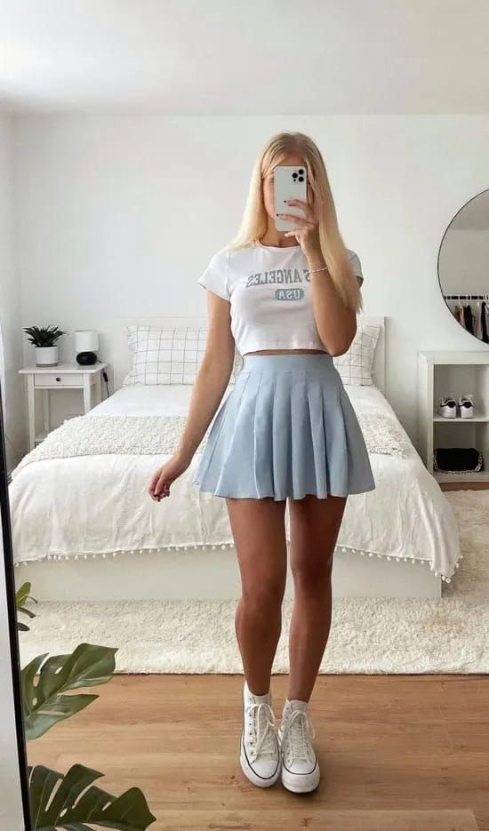
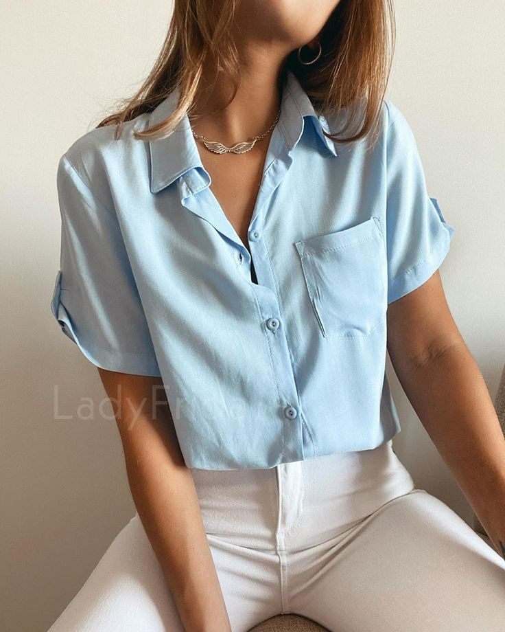
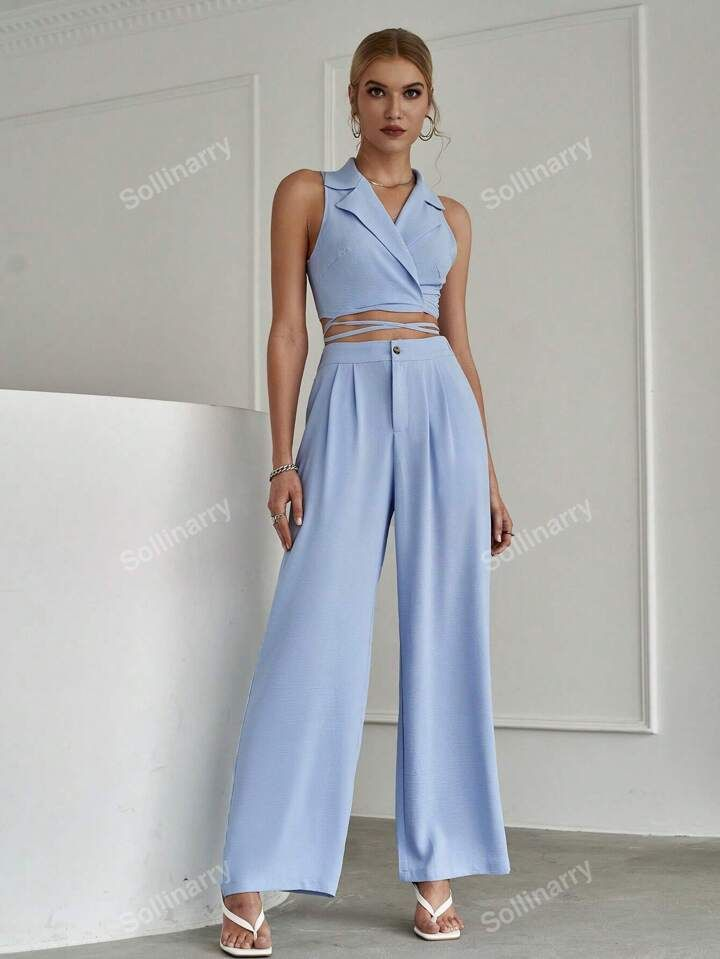

Vestido Aurora Boreal

Falda Cielo Claro

Top Brisa Ligera
.jpeg)
La ropa no solo es una necesidad funcional para protegernos del clima y cubrir nuestro cuerpo; es una forma profunda de comunicación, una expresión estética y emocional que nos conecta con el entorno y con quienes somos en esencia. En Cielo de Algodón, creemos que cada prenda que usas debe resonar contigo, debe abrazarte con suavidad y decir algo de ti sin palabras. Por eso, nuestras colecciones están inspiradas en los colores del cielo, en las texturas del algodón y en la ligereza del viento.
Desde nuestros inicios, nos preguntamos: ¿qué pasaría si la ropa se sintiera como un abrazo cálido? Y la respuesta fue simple: utilizar telas suaves, colores que transmitieran serenidad y diseños que no solo fuesen bellos, sino cómodos y funcionales. Así nació nuestra filosofía de diseño: cada prenda está inspirada en elementos naturales —el azul celeste de una mañana despejada, la brisa suave que acaricia los campos, las nubes blancas que flotan como pensamientos tranquilos en la mente—.
Utilizamos materiales ecológicos como algodón orgánico, lino natural y fibras recicladas que respetan tanto tu piel como el medio ambiente. Creemos que la sostenibilidad no es una tendencia, sino un compromiso que debe estar presente en cada botón, costura y empaque.
La paleta cromática de nuestras prendas está dominada por azules claros, celestes suaves, blancos cremosos y grises vaporosos. Estos tonos no solo combinan fácilmente entre sí, sino que evocan emociones de paz, apertura y armonía. El azul es un color que relaja la mente, inspira confianza y transmite frescura. Es el color del cielo y del mar, y al vestirlo, llevamos con nosotros un pedazo de horizonte.
Nuestros diseñadores trabajan con gran atención para encontrar el tono perfecto de azul que no opaque, sino que resalte la belleza natural de cada persona. Ya sea un vestido largo como una nube extendida, o un pantalón de lino con caída fluida, cada pieza busca convertirse en tu favorita, no solo por cómo te ves, sino por cómo te hace sentir.
Vivimos en una época donde muchas marcas promueven un ideal de moda basado en lo inmediato, lo impactante o lo excesivo. En cambio, en Cielo de Algodón, apostamos por una moda que no grita, sino que susurra. Creemos que la ropa debe adaptarse a ti y no al revés. Por eso, nuestros cortes son versátiles, pensados para acompañarte desde una mañana tranquila en casa hasta una tarde de paseo al aire libre.
Nos enfocamos en prendas que trascienden la estación y la tendencia. Nuestra ropa está diseñada para permanecer en tu clóset como un refugio de comodidad, no para ser reemplazada cada temporada. Un vestido azul claro no solo es bello en primavera: también puede ser una pieza elegante en invierno con un abrigo beige o gris. Una blusa celeste puede iluminar tus reuniones de trabajo y acompañarte en tus momentos de descanso.
En nuestra colección encontrarás una amplia variedad de estilos, todos unidos por una estética serena y contemporánea:
En Cielo de Algodón no creemos en lo masivo. Cada colección es limitada y cuidada, pensada para durar y para tener un valor emocional. Prestamos especial atención a los detalles pequeños: los botones de madera pulida, los bordes bordados a mano, las etiquetas de tela suave, los cortes pensados para favorecer todo tipo de cuerpo.
Cada pieza que sale de nuestro taller pasa por un proceso de revisión artesanal, asegurando que esté hecha con amor. Porque sabemos que cuando una prenda está hecha con cuidado, se nota... y se siente.
No queremos que simplemente compres ropa. Queremos que vivas momentos con ella. Que ese vestido azul claro te acompañe en un día especial, que esa blusa de algodón te abrace cuando necesites paz, que esos pantalones de lino estén contigo cuando sueñes despierta mirando el cielo.
La moda es pasajera, pero el estilo consciente permanece. Y creemos que cada persona tiene un estilo único que merece ser acompañado con piezas que la representen.
La belleza no tiene una talla única. Por eso, en Cielo de Algodón ofrecemos un rango de tallas inclusivo, desde la XS hasta la XXL, con opciones especiales a medida. Nuestras prendas están diseñadas para adaptarse, fluir y no limitar. La comodidad, la libertad de movimiento y la autoestima son partes fundamentales de nuestra propuesta.
Contamos con una guía de tallas clara y un equipo listo para ayudarte si tienes dudas sobre el ajuste, la tela o el estilo que más te favorece.
En un mundo cada vez más ruidoso, veloz y saturado, proponemos una moda que te invite a volver a ti. Que cada mañana, al abrir tu armario, encuentres calma. Que no elijas solo qué usar, sino cómo quieres sentirte. Nuestras prendas están aquí para recordarte que no necesitas disfrazarte para brillar. Tu autenticidad es tu mejor look.
Elegir ropa no debe ser un acto de presión, sino un gesto de amor propio. Vestirte con colores suaves, tejidos amables y cortes armoniosos es una manera de decirle a tu cuerpo: “te escucho, te cuido, te respeto”.
Gracias por confiar en una marca que busca algo más que vender. En Cielo de Algodón, creemos en crear comunidad, inspirar belleza desde lo simple y construir un mundo donde la ropa no oculte, sino revele la esencia de quien la lleva. Cada vez que eliges una de nuestras prendas, eliges una forma más consciente y amorosa de estar en el mundo.
Te invitamos a explorar nuestra colección, sentir nuestras telas, y dejarte vestir por la paz del cielo. Porque en cada costura hay una intención, y en cada color, un mensaje. Viste la calma. Viste el cielo. Viste con amor.